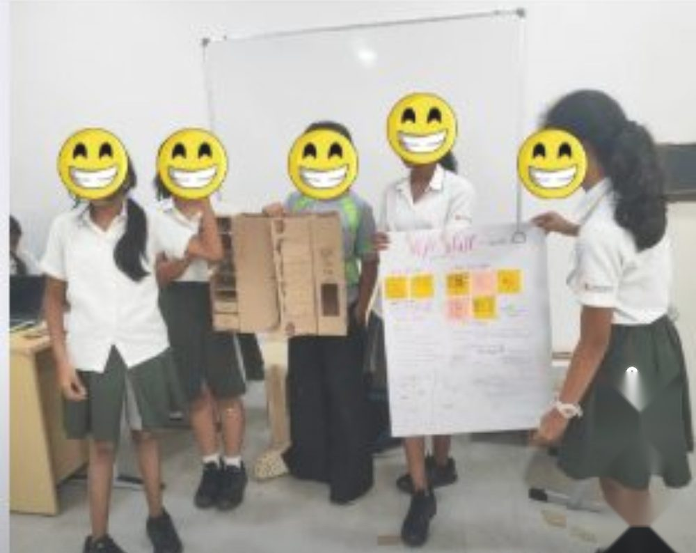
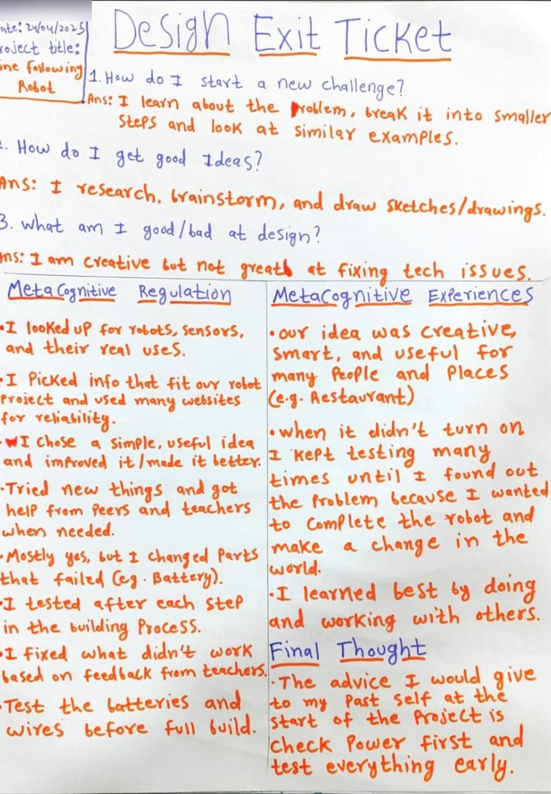
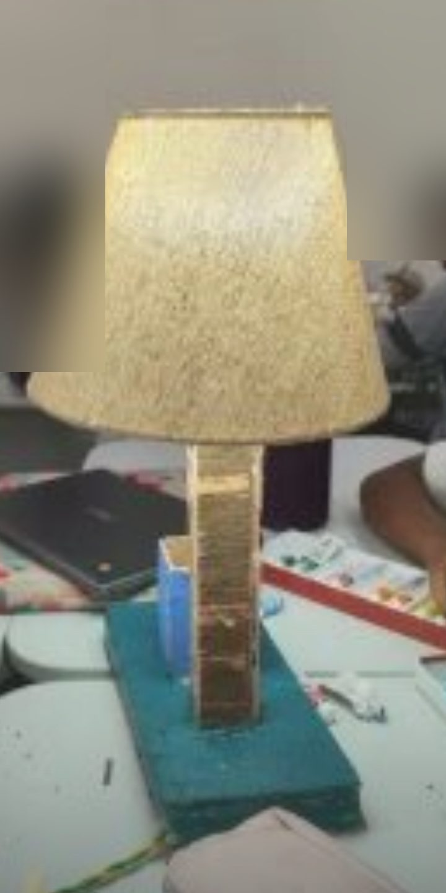
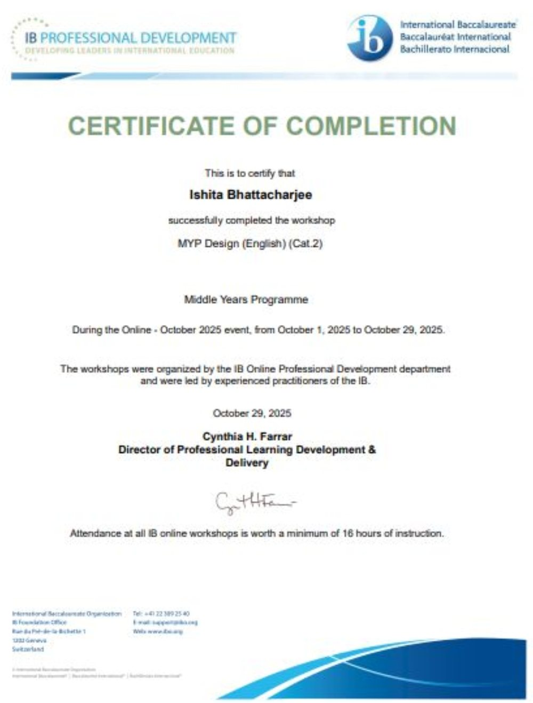

MYP Design
I teach Design in the International Baccalaureate Middle Years Programme (MYP) at Sreenidhi International School. I am also Grade Lead for MYP 3 and mentor teachers on the MYP Personal Project.
The design cycle, criteria A to D
The MYP Design cycle has four criteria. Tap one to see what students do in it, and the tasks, templates and samples that go with it.
- Students find a real problem, research it and justify why it needs solving. They plan their research, analyse existing products and finish with a design brief.
- Students turn research into a design specification, sketch a range of feasible ideas, choose one and justify the choice, then draw planning diagrams to build from.
- Students plan the making step by step, learn and show the technical skills they need, follow the plan to build the solution and justify any changes along the way.
- Students design tests for their solution, explain how well it worked, say how it could be improved and consider its impact on the people and context it was made for.
Use the arrow keys to move between stages if you are on a keyboard.
Criteria A to D: what students do
Jump to: A Inquiring B Developing C Creating D Evaluating
Criterion A: Inquiring and analysing
Students investigate a real problem and build the evidence for what to design.
What students do
- Explain and justify the need for a solution
- Construct a detailed research plan
- Analyse a range of existing products that inspire a solution
- Develop a detailed design brief
Tasks, templates and samples
- Criterion A design research workbookStudent workbook
- FA1: Creating research questionsFormative task, MYP 4
- Sensing the Environment: Criteria A and B summativeSummative task, MYP 2
- Criterion A templates and samplesJustification, research plan, analysis and brief
- Criterion A student sampleCompleted template, MYP 3
Criterion B: Developing ideas
Students turn their research into a specification and a design they can build.
What students do
- Develop design specifications with clear success criteria
- Present a range of feasible design ideas
- Present the chosen design and the reasons for choosing it
- Develop accurate planning drawings and diagrams
Tasks, templates and samples
- FA2: Creating a design specificationFormative task, MYP 4
- Isometric sketchingFormative task, MYP 2
- Design evaluation matrixTask scaffold, MYP 2
- Sensing the Environment: Criteria A and B summativeSummative task, MYP 2
- Criterion B student sampleCompleted template, MYP 3
Criterion C: Creating the solution
Students plan the making and build the solution, recording the process as they go.
What students do
- Construct a logical plan that a peer could follow
- Demonstrate excellent technical skills
- Follow the plan to create the solution
- Justify changes made to the design and the plan
Tasks, templates and samples
- Criterion C templateStudent template, MYP 3
- Design storybook, Criteria C and DStudent ePortfolio workbook
- Tinkercad Arduino coding challengeClasswork, MYP 2
- Debug the systemFormative task, MYP 2
- HTML and CSS website taskClasswork, MYP 4
- Creative App Design and Logic summativeSummative task, MYP 3
Criterion D: Evaluating
Students test the solution and decide what it achieved and what should change.
What students do
- Design detailed testing methods to measure success
- Explain the success of the solution against the specification
- Explain how the solution could be improved
- Explain the impact of the solution on the client or target audience
Tasks, templates and samples
- Sensing the Environment: Criteria C and D summativeSummative task, MYP 2
- Design storybook, Criteria C and DStudent ePortfolio workbook
- Creative App Design and Logic summativeSummative task, MYP 3
- Sensing Our World: testing scaffoldsTask plans, MYP 2
From my MYP classroom
-
Classroom3-min readThe Thinking Wall: helping MYP students notice how they think
Four thinkers, a shared board and a "fifth thinker" students invented.
-
Classroom2-min readLearning Fest: when students transferred their skills to a new context
Electrical board game skills reused, unprompted, to build a new Learner Profile game.
-
ClassroomArticle4-min readScaffolding students in learning how to inquire
Why I taught research and thinking skills before ideation in a lip balm unit.
-
Classroom2-min readEarning the Padlet Green Belt, and what Padlet means in my classroom
Giving every student a voice, including the ones who hesitate to speak.
-
Classroom2-min readFaces of MYP 1: a classroom wall made by students
Stepping back from teacher-led decoration so students own the space.
-
Classroom2-min readMYP Enhancing Curriculum Design Basecamp
A month of learning with Design teachers around the world.
-
Leadership2-min readLeading a session on student voice, choice and ownership
Co-designing existing units with colleagues to embed student agency.
-
Making4-min readRapid Prototyping Sprint: the start of a school-level innovation ecosystem
Student teams ideate, prototype and pitch in one day, then get mentored by an educator from South Korea.
-
Classroom3-min readExit tickets that teach students to think about their thinking
Deeper prompts after a project help students see how they plan, monitor and adjust.
-
Classroom4-min readDesigning for inclusivity: a ramp for the school
A student used the nets of 3D shapes from maths to plan the cuts for an adjustable wooden ramp.
-
Classroom3-min readWhy do we claim to be the sole authority on knowledge?
A lamp brainstorm at the start of a design unit, and what student ideas taught me.
-
Classroom3-min readDraw your vision of the future: line-following robots
Students drew how robots could farm, move people and deliver parcels.
-
Classroom4-min readBalanced: a self-management activity
Students visualise balance in their lives and plan how to restore it.
Student work



Formal learning in MYP Design

The Personal Project
The Personal Project is the MYP's student-led project, where students choose something to investigate or make over an extended period.
- Supervisor to students since December 2024.
- Mentor for teachers since August 2026. I guide teachers on project requirements, supervision practice and assessment criteria.
[Add one example of a Personal Project you supervised, with the student's consent.]
Grade Lead, MYP 3
I have led the MYP 3 year group since January 2026, with a focus on student wellbeing and pastoral care. Read more. I also train teachers to use ManageBac and manage its academic year transition and reporting.